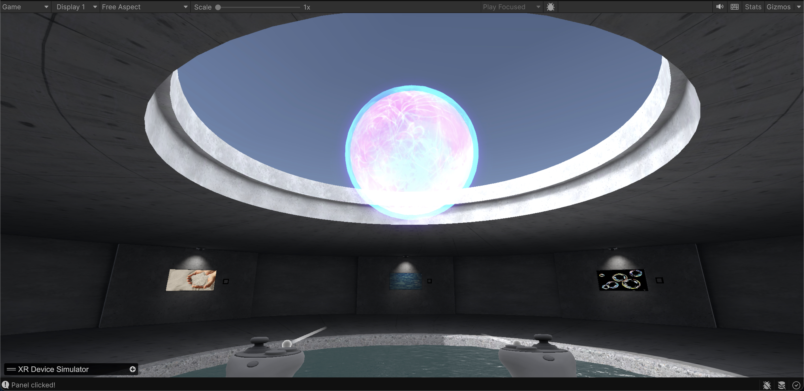
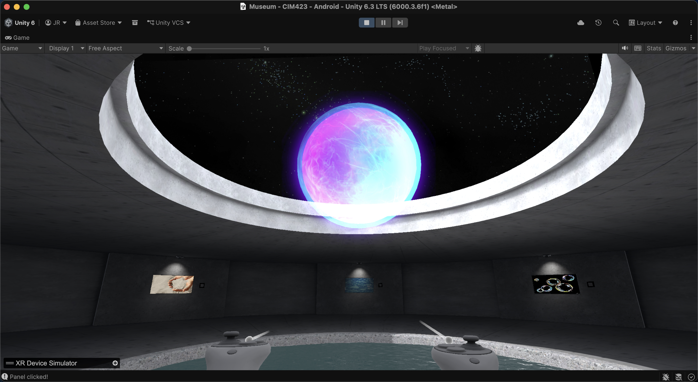
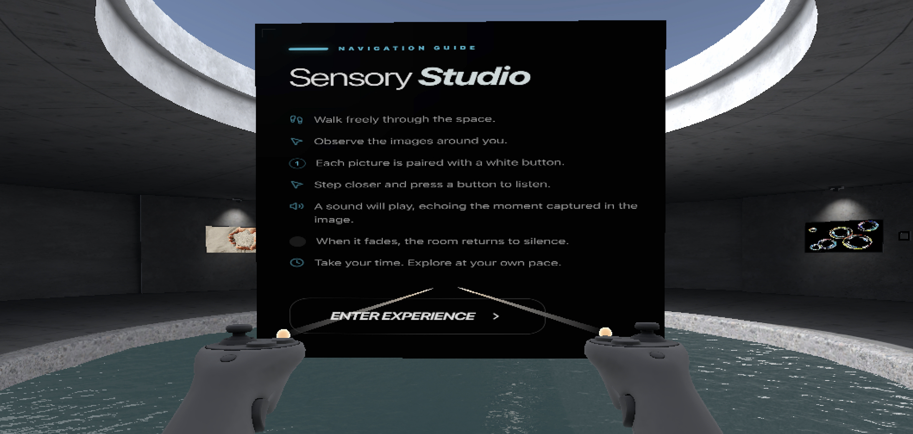
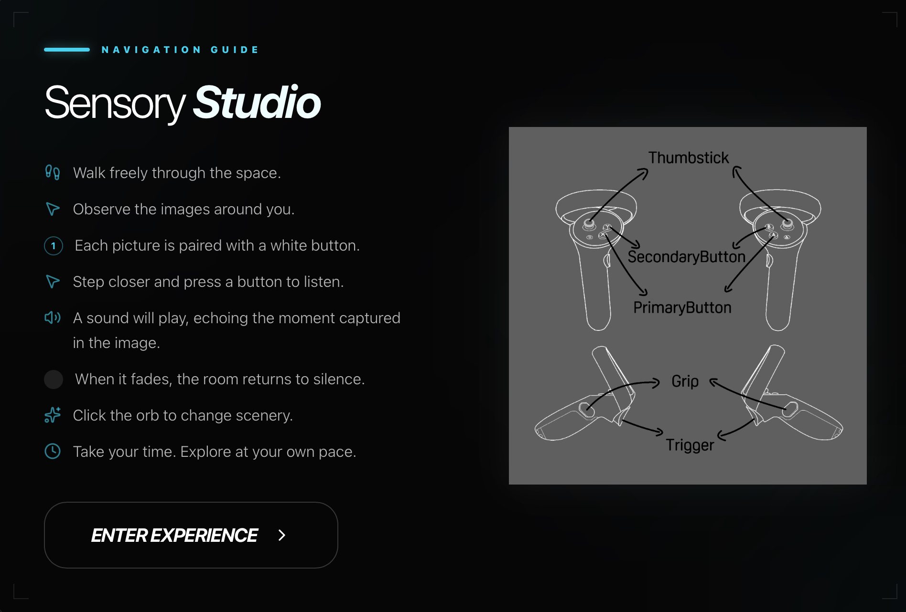

An immersive VR museum designed to encourage users to slow down, explore, and engage with sensory-based interactions — reinforcing mindfulness through presence, not instruction.
Sensory Studio is a VR/XR interactive museum built in Unity for the Meta Quest platform. The experience guides users through a curated space where each station activates a distinct auditory response — using environment rather than UI to communicate intent.
The project explores how environmental storytelling and tactile interaction can shape emotional awareness in immersive media. There is no leaderboard. No timer. No failure state. Only the space, and your curiosity.
Each station emits unique positional sound, drawing users through the environment naturally.
XR Simple Interactable — no menus, no prompts. Your hands do the discovering.
Completing all 7 stations resets the experience — inviting re-entry rather than exit.
A walkthrough of the full Sensory Studio experience on Meta Quest — from the entrance guide through all seven stations and the glowing sphere.
Each station is a framed image mounted on the wall, paired with a white button. Walk up to an image, press the button, and a sound plays that echoes the moment captured in the photograph. When it fades, the room returns to silence.
Beyond the seven wall stations, the room contains two ambient interactive elements that respond to presence and touch.
A luminous sphere at the centre of the room that toggles the entire environment between day and night — shifting the skylight, shadows, and atmosphere with a single touch.


A shallow pool occupies the floor at the room's centre. Walking across its surface triggers spatial water sounds — a subtle reward for physical exploration rather than button presses.
The pool reinforces the experience's core thesis: the environment responds to you, not the other way around.
The exit door acts as a soft gate. It listens — not to lock you out, but to ask if you've truly arrived.
| User Action | System Response |
|---|---|
| Approaches a station | Framed image visible on wall with paired white button |
| Presses the button | Sound plays — echoing the moment captured in the image |
| Walks over the water pool | Spatial water sounds triggered underfoot |
| Touches the glowing sphere | Environment toggles between day and night lighting |
| Sound finishes | Room returns to silence; station marked complete |
| Attempts to exit early | "You cannot leave… until you have interacted with all seven experiences." |
| Completes all 7 stations | Experience marked complete; exit unlocked |
| Exits after completion | Scene resets via SceneManager reload |
Establishing foundational XR interactability, testing ray and direct interaction modes, and mapping out spatial layout through experimentation.
Interactions functioned in isolation but had no connective tissue — users could leave without engaging. The space felt like a sandbox rather than a journey. Progression logic was entirely absent.
Introduced the 7-interaction tracking system, conditional exit logic, voice feedback for incomplete progress, and a full scene reset loop. The water pool and glowing sphere were added as ambient environment features — rewarding curiosity outside the main station loop.
The project transitioned from a "sandbox of buttons" to a guided sensory journey. Every system change was made in service of that shift — presence over challenge, exploration over instruction.


Sensory Studio was built on a deliberate rejection of traditional game loops. Rather than gamifying the space, every design decision serves one purpose: to make the user feel here.
The experience demonstrates how XR can create experiential storytelling without narrative dialogue — using sound, space, and participation as its only language.